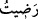
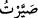

o vakit Arafat’ta, Adbâ adındaki devenin üzerinde idi. Vahyin ağırlığından neredeyse
devenin bacakları kırılıyordu. Nitekim vahyin sıkletine hayvan daha fazla tahammül
edemedi ve hemen olduğu yere çöktü.
“Kâfirler sizin dîninizden ümit kesmişlerdir.” Allah’ın haram kıldığı pis şeyleri
tekrar helal sayarak dîninizi bâtıl hâle getirmenizden, dîninizden geri dönmenizden veya
Allah’ın mü’minleri tüm dinlerin üstüne çıkaracağına dâir vaadini yerine getirdiğine
şâhit olduktan sonra artık size gâlip gelmekten umudu kesmişlerdir. Bu son îzah âyetin
devâmına daha uygun düşmektedir: “Artık onlardan korkmayın”, onların size üstün
gelmesinden endişe etmeyin. “Benden korkun.” korkuyu bana has kılın, yalnız Benden
korkun.
“Bugün sizin için dîninizi kemâle erdirdim.” Diğer dinlere karşı size yardım ederek
ve sizi onlara karşı üstün kılarak dîninizi olgunlaştırdım. İnanç esaslarını sağlam
temeller üzerine binâ ederek, şerîat hükümlerini belirli ve tutarlı esaslara bağlayarak ve
bu ana kurallar üzerine ictihad şartlarını size öğreterek dîninizi olgunlaştırdım.
Sizi hidâyete erdirerek ve buna muvaffak kılarak ya da size gönderdiğim dîni ikmal
ederek ve şerîatımı tamamlayarak veya Mekke’yi fethedip oraya güven içinde gâlip
olarak girmenizle, câhiliye âdetlerinin ve alâmetlerinin kaldırılmasıyla ve müşriklerin
hacdan men edilerek Kâbe’yi çıplak tavaf etmelerinin önlenmesiyle “size” olan
“nîmetimi tamamladım.”
“Ve sizin için din olarak İslâm’ı beğendim.” Bütün dinler arasından size İslâmı
seçtim. Allah katındaki din İslâm’dır, başkaları değil. (bk. Âl-i İmran, 3/19)
“Beğendim” diye ifâde ettiğimiz “” lafzının, “” “kıldım, döndürdüm”
anlamında olması da mümkündür.
Câbir b. Abdillah der ki: Rasûlullah (s.a.v.)’in şöyle buyurduğunu işittim: “Cibril
(a.s.) bana Allah Teâlâ’nın şöyle buyurduğunu söyledi: “Bu din (yani İslâm) zâtım
(kendim) için seçtiğim bir dindir. Ona ancak cömertlik ve güzel ahlâk yakışır.
Müslüman olarak yaşadığınız sürece bu iki hasletle ikrâm ediniz.”[240]
Hz. Ömer (r.a)’den rivâyet edildiğine göre yahûdîlerden bir adam kendisine şöyle
demiştir: “Ey mü’minlerin emîri! Kitâbınız (Kur’ân) da okuduğunuz öyle bir âyet var ki
o biz yahûdî toplumuna inseydi biz o günü bayram ilan ederdik.” Hz. Ömer (r.a.):
“Bahsettiğin âyet hangisidir?” diye sorunca, yahûdî: “Bugün sizin için dîninizi kemâle
erdirdim...” âyetidir. dedi. Ömer (r.a.) şöyle buyurdu: “Biz bu âyetin Peygamber (a.s)’a
nâzil olduğu günü ve yeri biliyoruz. Bu âyet, Cuma günü Rasûlullah (s.a.v.) Arafat’ta
iken nâzil olmuştur.” Hz. Ömer böyle cevap vererek o günün bizim için de bayram
olduğuna işâret etmiştir.
İbn Abbas (r. anhüma) der ki: Bu âyetin nâzil olduğu gün, beş bayram bir araya
gelmiştir. Bunlar Cuma, arefe, yahûdîlerin, hristiyanların ve mecusilerin bayramı idi.
Ne bundan önce ne de sonra farklı din mensuplarının bayramları bir günde
toplanmamıştır.”
Rivâyet edilir ki bu âyet nâzil olunca Hz. Ömer ağlamaya başladı. Peygamber